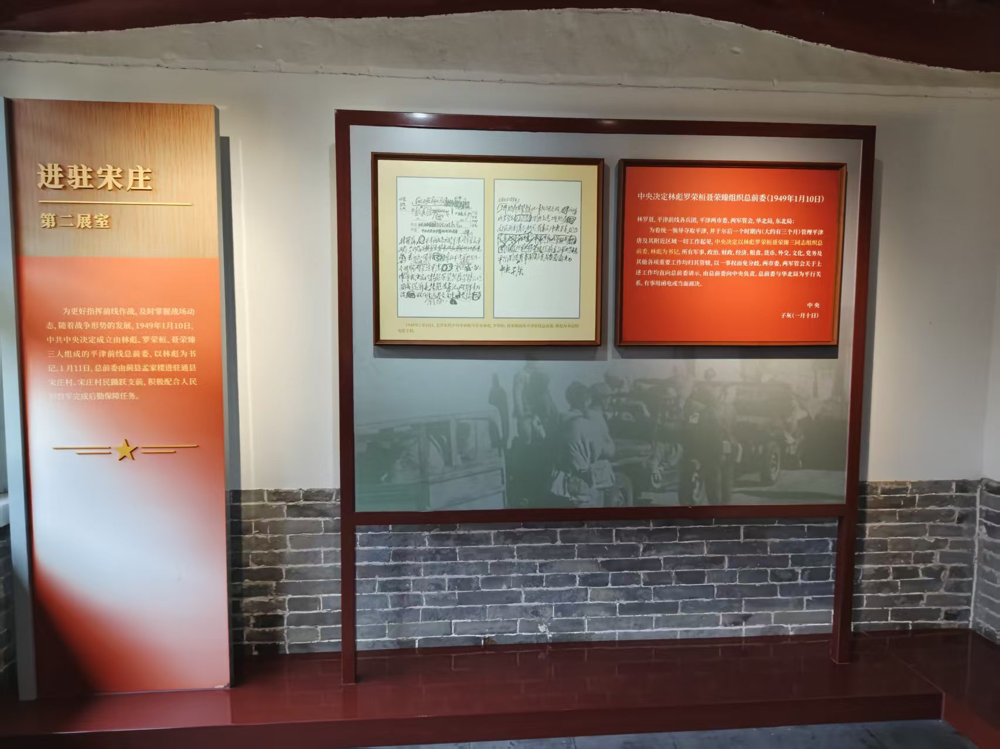
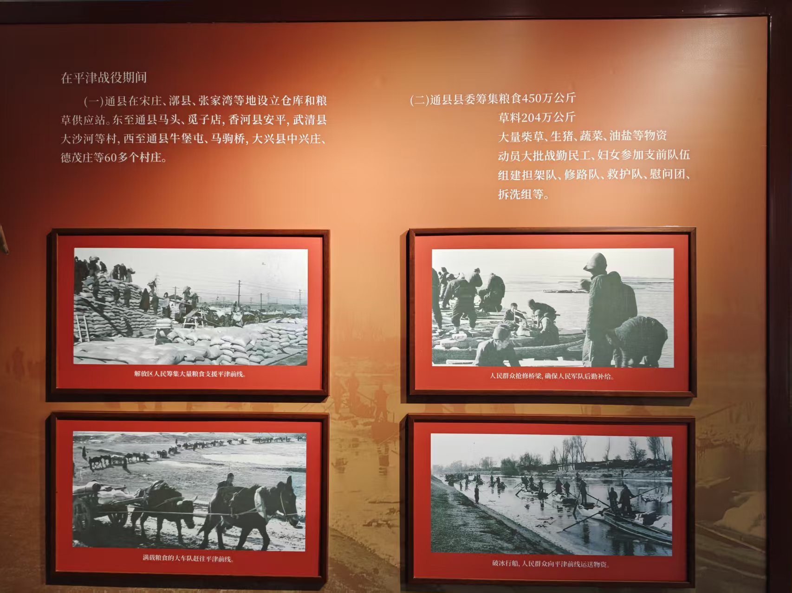
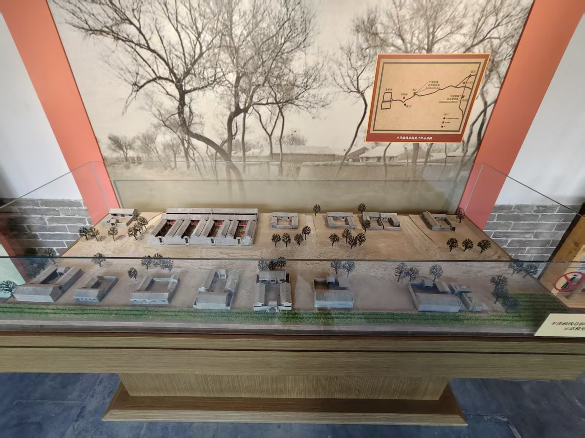
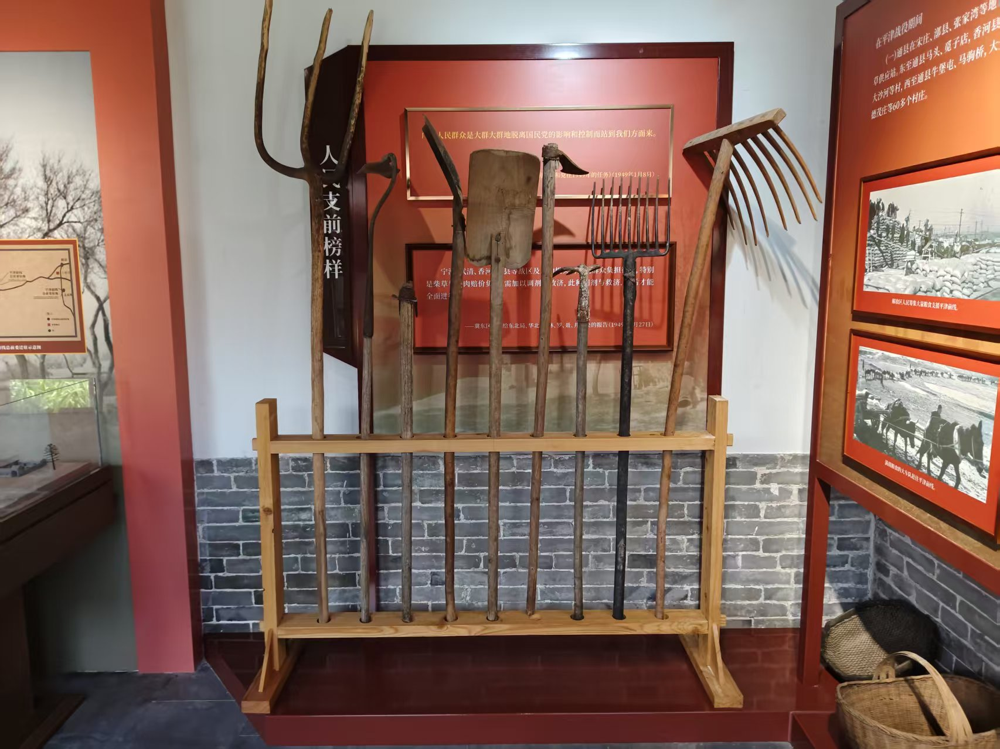
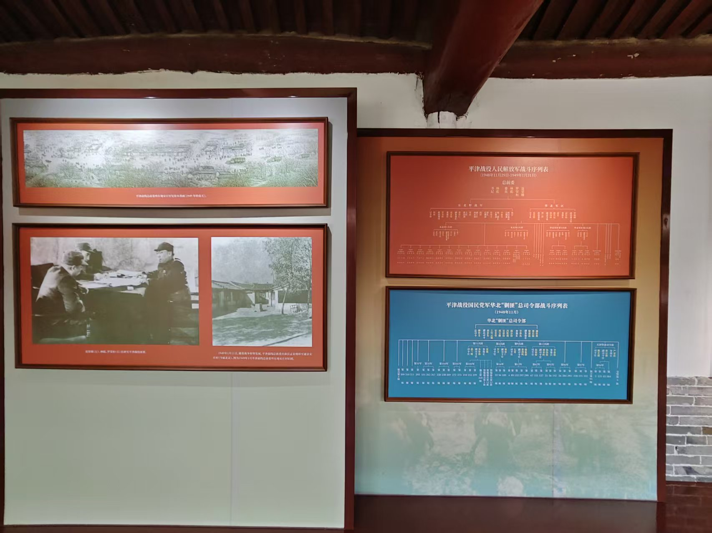

展区 2：进驻宋庄
欢迎来到第二展区，进驻宋庄。

此展区聚焦1949年1月11日平津前线总前委进驻通县宋庄村的历史时刻，通过电报手稿与组织文件，展现林彪、罗荣桓、聂荣臻等领导人指挥全局的决策过程。

展区以四幅历史照片呈现解放区人民支援前线的壮举，包括筹集粮食、抢修桥梁、马车运粮、破冰行船等，
生动诠释了“人民战争”的深厚根基。

该模型还原了平津前线总前委在宋庄村的驻地布局，
结合背景地图清晰标示出指挥所位置及周边村落分布，直观再现当年指挥中枢的地理环境。

展架上陈列着铁锹、锄头、扁担、耙子等农具，这些是当时群众参与支前劳动的直接见证，
象征着“一切为了前线”的全民动员精神。

左右两侧分别展示解放军与国民党军华北“剿总”的战斗序列表，通过清晰的组织架构对比，
凸显双方在兵力部署与指挥体系上的差异，为理解战役进程提供关键背景。